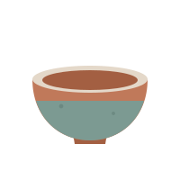

One of a kind, every time
Each piece exists only once.
A very small studio. Everything is thrown, glazed and fired by hand, and the glazes never fall the same way twice — so no piece can be made again. What you see is the only one there is.

Fresh out of the kiln
The latest firing
These are single pieces, not a line. Each one came out of the kiln the way it did and will not come out that way again — when it goes, it goes for good.

The studio
Two hands, and they are both mine
Sea Salt Clay is one person. There is nobody else — I throw every piece, glaze it, fire it and pack it myself.
What keeps me at the wheel is that clay is soil. You take a lump of earth and it becomes the cup somebody reaches for every morning. That still seems remarkable to me.
From clay to shelf
Four steps, two weeks
-
Throwing
Clay is wedged, centred and thrown on the wheel, then left to firm up overnight.
-
Trimming
Each piece goes back on the wheel to have its foot trimmed, and handles are pulled by hand.
-
Bisque firing
A first low firing hardens the clay so it can take glaze without falling apart.
-
Glaze & fire
Glazes are mixed in-studio, dipped by hand, and fired to 2200°F until they go glassy.
Stay in the loop
Kiln openings are announced first on Instagram
New batches sell out quickly. Follow along and you'll see what's coming out of the kiln before it goes up in the shop.
Follow @seasaltclay